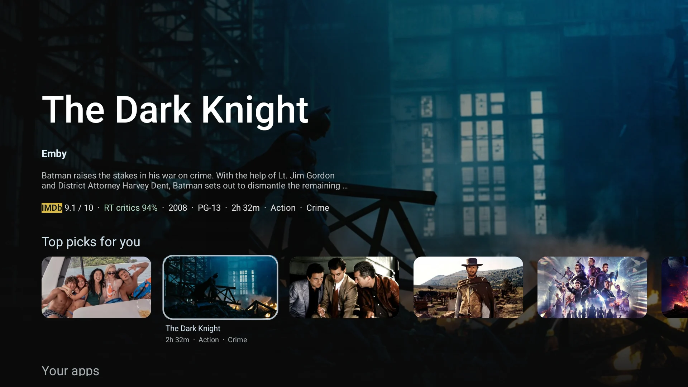
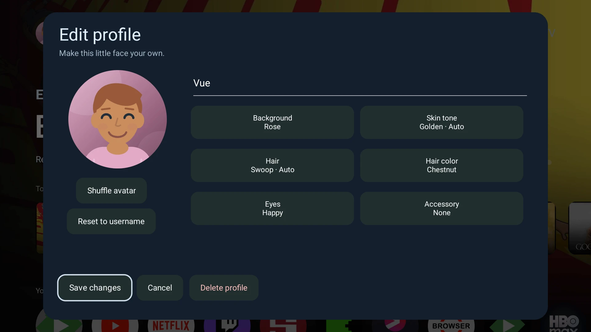
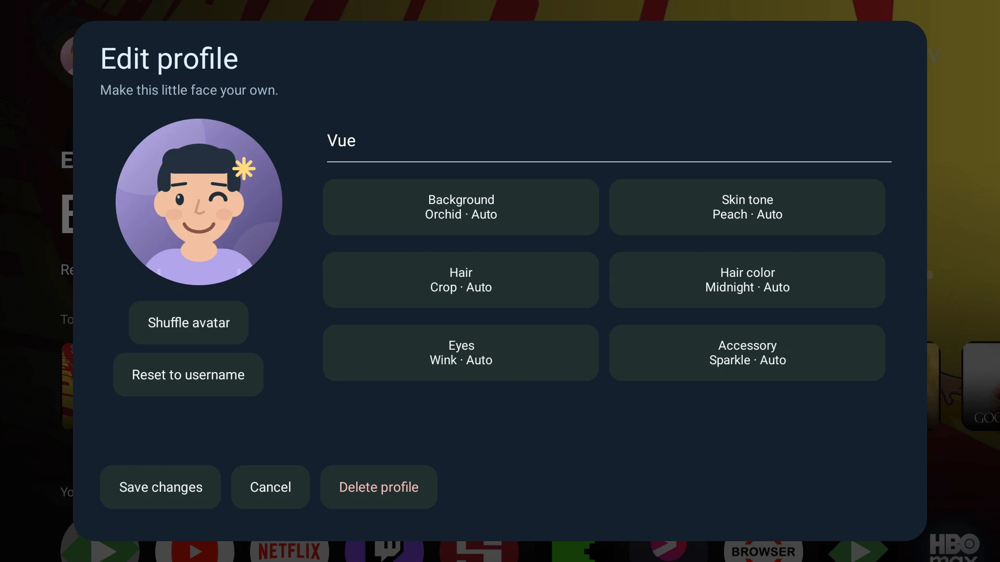
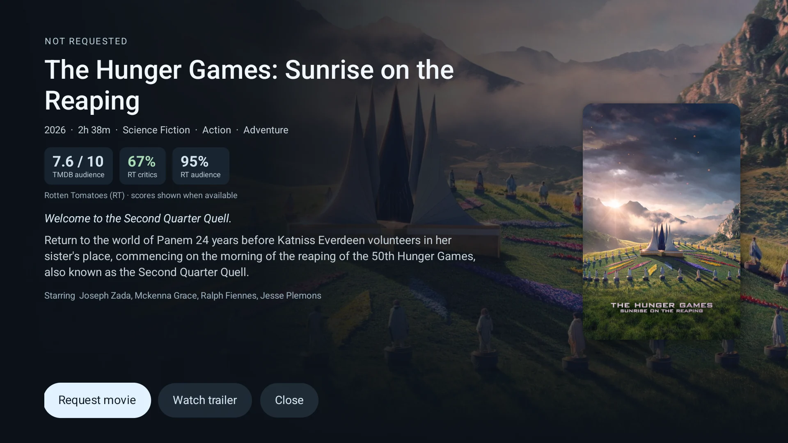

Your TV.
Your rules.
Your library. Your follows. Your people.
A home screen built around what you actually watch.

A place for your favourites.
YouTube and Netflix open in their own apps.
A home worth
coming back to.
Go ahead. Pick a view, click around,
and make yourself at home.
Give your next watch the spotlight.
Full artwork, a proper synopsis, ratings and the details that matter. Move between your picks and the whole screen follows.
An interactive tour of real Vue TV captures. This preview doesn’t control your television or send media requests.
Less friction.
More flow.
Soft focus glows. Artwork that melts into the next. Navigation that follows your remote, without pulling you out of the moment.
Same screen.
Different worlds.
Your connections, your app order, your own little face. Switch users and come back to a home that feels like yours.
- Separate Emby, Twitch and Requests sign-ins
- A unique avatar, based on your username
- Colours, hair, expressions and accessories
- Your profile remembered after a restart


Drag to compare two real views from the avatar editor.
Find it.
Get the full picture.
Discover a movie or show. Check the story,
scores and trailer. Request it when you’re ready.

Search beyond your library.
Browse trending titles, popular movies and shows, or search for something specific.
More than a poster.
Synopsis, cast, genres and available TMDB, IMDb and Rotten Tomatoes scores. Watch trailers in YouTube.
A movie. A season. Your call.
Choose seasons for shows and confirm before sending. Your existing Jellyseerr approval rules still apply.
0.20.6: Give Live a head start.
Home prepares a paused Twitch player so Live can reuse it. On our Google TV Streamer, entering Live after preparation took 3.1 seconds, with later returns taking 2.0–2.7 seconds. Video stays paused outside Live. Opening Live immediately can still need cold initialization; channel changes and buffering depend on Twitch and your connection.
Read release notesThoughtful details.
Every single day.
Select a detail to see how it works.
A few things to know.
What content appears on the home screen?
Emby provides your library picks, Continue watching and Recently added. Twitch provides live channels you follow; select one to watch it in S0undTV. YouTube and Netflix are app shortcuts; their private home feeds are not pulled into Vue TV.
Are there ads?
Vue TV’s home screen has no sponsored rows or advertising feed. Full playback happens in the streaming apps. Optional Live previews use the official Twitch player. Those players keep their own advertising and subscription rules.
Can everyone use their own account?
Yes. Each local profile has its own service sign-ins, app order, preferences and content cache. Create a user from the top-left avatar, then connect their services. Profile editing and deletion live in Edit profile.
How do requests work?
Sign in to your Jellyseerr instance with your Emby account, discover a title and confirm the request. Movies and TV season selection use the permissions, quotas and approval settings already configured on the server.
Can I install Vue TV on my own TV?
Yes. Download the signed preview APK from GitHub Releases and follow the setup guide to connect your own services. Android 8.0 or newer is required; device-specific behavior has been tested on Google TV Streamer with Android 14. Other firmware may behave differently. HTTPS server connections are required.